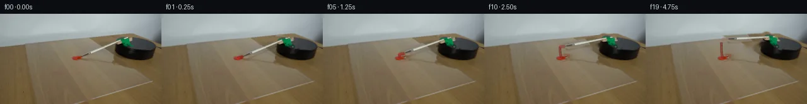

![首帧]()

Round 00
2026-11-05T08:32:31.388774+00:00像素候选变化代码 +250/−0inspection 更新
pixels 00ef6e0f92936e6f · code 217a0d1d670297b7
查看本轮 generate.py 真实 diff
--- previous/generate.py +++ current/generate.py @@ -0,0 +1,250 @@ +#!/usr/bin/env python3 +"""Generate the 20-frame PixelWorld continuation using local pixel operations.""" + +from pathlib import Path + +import cv2 +import numpy as np +from PIL import Image, ImageDraw, ImageFont + +import artifact_io + + +ROOT = Path(__file__).resolve().parent +W, H = 256, 144 +PIVOT = np.array([208.0, 52.0], dtype=np.float32) +TIP = np.array([122.0, 70.0], dtype=np.float32) +FINAL_DEGREES = 20.0 + + +def smoothstep(x: float) -> float: + x = float(np.clip(x, 0.0, 1.0)) + return x * x * (3.0 - 2.0 * x) + + +def geometric_brush_mask(source: np.ndarray) -> np.ndarray: + """Mask the photographed pale brush and its green platform attachment.""" + mask = np.zeros((H, W), np.uint8) + # Main pale shaft / ferrule / bristle footprint. + cv2.line(mask, (124, 70), (190, 41), 255, 9, cv2.LINE_AA) + cv2.ellipse(mask, (128, 68), (10, 5), -22, 0, 360, 255, -1, cv2.LINE_AA) + # Green attachment linking the shaft to the black platform. + cv2.line(mask, (186, 42), (211, 50), 255, 13, cv2.LINE_AA) + cv2.ellipse(mask, (207, 50), (6, 5), 0, 0, 360, 255, -1, cv2.LINE_AA) + + # The red paint belongs to the acrylic, not to the extracted brush. + red = ( + (source[:, :, 0].astype(np.float32) > 92) + & (source[:, :, 0] > source[:, :, 1].astype(np.float32) * 1.28) + & (source[:, :, 0] > source[:, :, 2].astype(np.float32) * 1.20) + & (np.indices((H, W))[1] < 150) + & (np.indices((H, W))[0] < 90) + ).astype(np.uint8) * 255 + red = cv2.dilate(red, np.ones((3, 3), np.uint8), iterations=1) + mask[red > 0] = 0 + return mask + + +def clean_plate(source: np.ndarray, hard_mask: np.ndarray) -> np.ndarray: + """Remove only the moving brush pixels while retaining the fixed scene.""" + fill_mask = cv2.dilate((hard_mask > 24).astype(np.uint8) * 255, + np.ones((3, 3), np.uint8), iterations=1) + plate = cv2.inpaint(source, fill_mask, 4, cv2.INPAINT_TELEA) + + # Restore the original red dollop exactly on a softly expanded red mask. + red = ( + (source[:, :, 0].astype(np.float32) > 92) + & (source[:, :, 0] > source[:, :, 1].astype(np.float32) * 1.28) + & (source[:, :, 0] > source[:, :, 2].astype(np.float32) * 1.20) + & (np.indices((H, W))[1] < 150) + & (np.indices((H, W))[0] < 90) + ).astype(np.uint8) + red = cv2.dilate(red, np.ones((3, 3), np.uint8), iterations=1) + plate[red > 0] = source[red > 0] + return plate + + +def rotation_matrix(degrees: float) -> np.ndarray: + """Forward image-coordinate clockwise rotation about PIVOT.""" + a = np.deg2rad(degrees) + c, s = float(np.cos(a)), float(np.sin(a)) + px, py = map(float, PIVOT) + return np.array( + [[c, -s, px - c * px + s * py], + [s, c, py - s * px - c * py]], + dtype=np.float32, + ) + + +def transform_point(point: np.ndarray, degrees: float) -> np.ndarray: + a = np.deg2rad(degrees) + c, s = float(np.cos(a)), float(np.sin(a)) + d = point.astype(np.float32) - PIVOT + return PIVOT + np.array([c * d[0] - s * d[1], + s * d[0] + c * d[1]], dtype=np.float32) + + +def alpha_over(base: np.ndarray, overlay: np.ndarray, alpha: np.ndarray) -> np.ndarray: … diff truncated; 163 more lines …